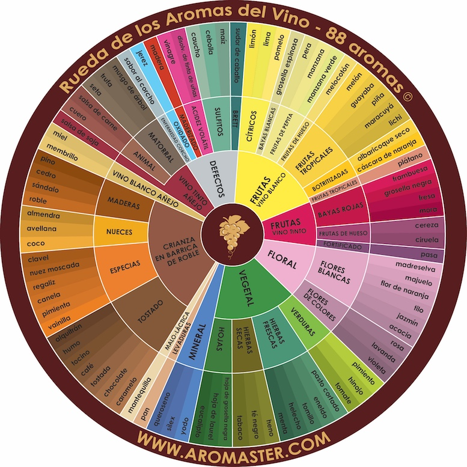

Análisis sensorial y deducción aromática
Cargando detalles de la cata...
Determina el origen primario o defecto principal del aroma:
Identifica la familia aromática específica del perfil seleccionado:
Selecciona la nota aromática exacta detectada en la muestra:
Has completado el análisis sensorial de todas las muestras.
